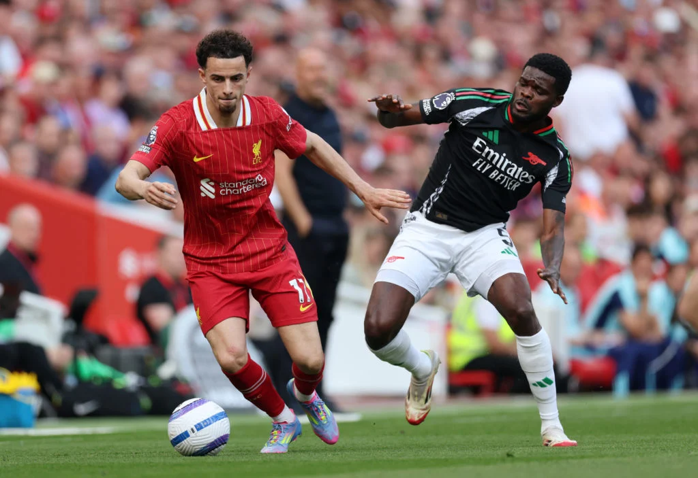

2 - 2
Data: 4 Maggio 2025
Stadio: Emirates Stadium, Londra
Competizione: Premier League - Giornata 35
Marcatori
- ⚽ Martinelli (15’)
- ⚽ Saka (42’)
- ⚽ Salah (Liverpool, 55’)
- ⚽ Diaz (Liverpool, 78’)
Analisi della partita
Partita molto equilibrata con l’Arsenal che parte forte e segna due gol nel primo tempo grazie a Martinelli e Saka. Nella ripresa, il Liverpool reagisce con intensità e trova il pareggio con Salah e Diaz.
Prestazione solida di Partey a centrocampo e una difesa attenta ma che ha sofferto la velocità degli attaccanti avversari. Con questo pareggio, l’Arsenal mantiene vive le speranze per il titolo.
